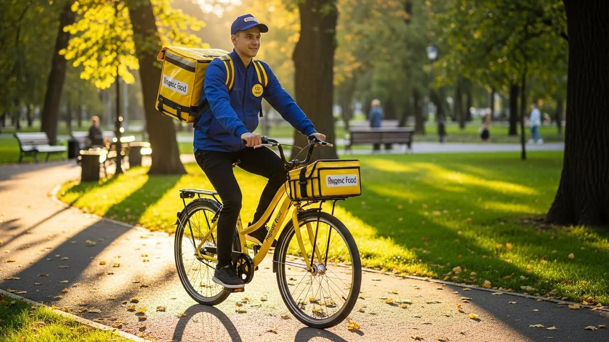
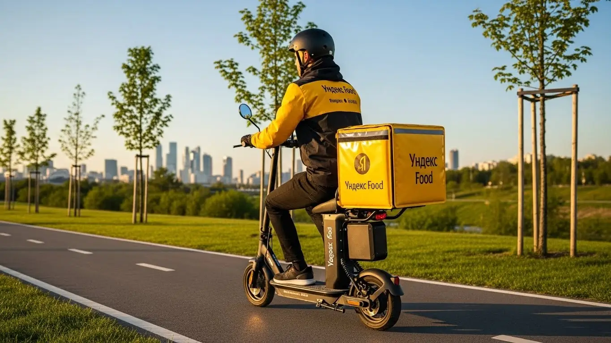
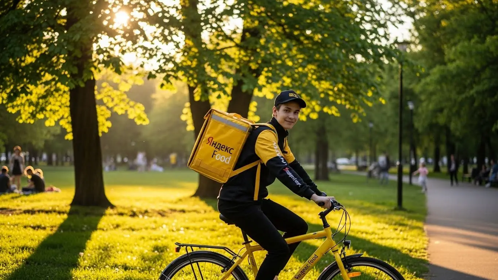

Сколько зарабатывает курьер Яндекс Еды в Благовещенске в 2025-2026

- Работа курьером Яндекс Еды в Благовещенске: для кого эта вакансия и что вы получите
- Сколько вы будете зарабатывать курьером в Благовещенске: калькулятор дохода и разбор выплат
- Реальный заработок курьера в Благовещенске: смены и месячный доход
- График работы и форматы занятости
- Требования к кандидату и документы
- Самозанятость, налоги и юридическая чистота
- Пошаговое оформление и первый выход на линию в Благовещенске
- Пешком, на вело или на авто: что выгоднее в Благовещенске
- Районы, маршруты и «топовые» зоны заказов в Благовещенске
- Безопасность, страховка, штрафы и оплата простоя
- Плюсы и возможные минусы работы курьером в Благовещенске
- Реальные истории и отзывы курьеров из Благовещенска
- Ответы на главные вопросы о работе курьером Яндекс Еды в Благовещенске
- Короткие ответы на главные вопросы
- Заключение: твой старт в Благовещенске
Все города
Здорово! Думаешь, работа курьером Яндекс Еда в Благовещенске — это легкие деньги? Видишь рекламу про «доход до 100 тысяч» и уже прикидываешь, как будешь кататься по городу? Погоди. А ты готов к пробкам на Ленина в час пик, к ледяному ветру с Амура зимой и к тому, что навигатор поведет тебя через дворы, где и пешком не пройдешь? Я здесь не для того, чтобы пугать, а чтобы рассказать, как оно есть на самом деле, без рекламной шелухи.
Поверь, разница между курьером, который в Благовещенске зарабатывает 3-4 тысячи за смену, и тем, кто едва отбивает бензин, — в знании мелочей. Большинство новичков слепо верят приложению, хватают заказы из центра в отдаленный Микрорайон в час пик и не понимают, почему в конце дня в кармане пусто. Они не считают реальные расходы, не знают, где спрос выше, и как система приоритета может оставить тебя без заказов на час. Эта статья — твоя страховка от таких ошибок. Если хочешь сразу перейти к делу, то все актуальные условия и форма заявки есть на официальной странице про работу курьером Яндекс Еда в Благовещенске.
Здесь мы всё разложим по полочкам. Мы честно посчитаем, сколько реально можно заработать в Благовещенске пешком, на велосипеде и на авто, вычитая все расходы. Я покажу, в каких районах и в какое время заказов больше всего, а куда лучше не соваться. Разберём, как амурская погода — от летнего зноя до зимних метелей — влияет на доход и твою безопасность. И, конечно, поговорим о штрафах: за что они прилетают и как их избежать. Никакой воды, только мясо и конкретика для нашего города.
Меня зовут Алексей. Я сам откатал не одну тысячу километров по Благовещенску с желтой сумкой, а сейчас у меня свой небольшой таксопарк-партнёр. Я видел эту кухню со всех сторон — и как курьер на линии, и как тот, кто помогает ребятам подключаться. Так что заваривай чай, усаживайся поудобнее. Сейчас я, как старший брат, расскажу тебе всю правду про работу курьером Яндекс Еды в нашем Благовещенске. Давай по порядку.
Но прежде чем нырять в детали, давай быстро пробежимся по главным моментам. Это поможет сориентироваться в статье.
Главные вопросы, на которые я дам честный ответ
В этой статье ты ТОЧНО узнаешь:
- Сколько реально заработать в Благовещенске за смену пешком, на вело и на авто, и как погода влияет на доход?
- В каких районах Благовещенска больше всего заказов и как выбирать «рыбные» слоты в приложении, чтобы не сидеть без дела?
- Что выгоднее выбрать в Благовещенске — доставку пешком, на велосипеде или на машине, и в чём плюсы и минусы каждого способа?
- Как за 10 минут оформить самозанятость и сколько налогов придётся платить с заработка?
- За что на самом деле снижают рейтинг или блокируют, и как работает страховка, если что-то случится на смене?
- Какой путь нужно пройти от анкеты до первого заработанного рубля и сколько времени это займёт?
А если тебе некогда читать всю статью — переходи сразу к заключению, где ты найдёшь короткие ответы на все эти вопросы и указания, в каких разделах искать подробности.
А вот наглядная инфографика, чтобы сразу оценить ключевые цифры по доходу.
Яндекс Еда в Благовещенске: ключевые цифры
Работа курьером Яндекс Еды в Благовещенске: для кого эта вакансия и что вы получите
Кому подойдёт эта работа в Благовещенске
Давай начистоту: эта работа не для всех, но для многих она — настоящая находка. В Благовещенске курьером в Яндекс Еде чаще всего идут студенты местных вузов вроде АмГУ или БГПУ. Им нужен гибкий график, чтобы совмещать с парами, и быстрые деньги на карту. Отличный вариант, чтобы не просить у родителей и самому закрывать свои расходы.
Также это идеальная подработка для тех, у кого есть основная работа со сменным графиком или просто несколько свободных вечеров в неделю. Ты сам решаешь, когда выходить на линию, без начальников над душой. Кроме того, это хороший старт для людей без опыта. Тебе не нужно проходить долгие собеседования — всё обучение проходит онлайн, и уже на следующий день можно получить первый доход. И конечно, это отличный вариант для водителей, которые хотят, чтобы их личный автомобиль приносил дополнительный заработок, а не просто стоял под окном.

Главные преимущества для жителей районов Микрорайон, Центральный, 800-й квартал
Главный плюс, который многие недооценивают, — возможность работать буквально в своём районе. Если ты живёшь, например, в Микрорайоне, тебе не нужно ехать через весь город на другой берег Зеи, чтобы начать смену. Просто выходишь из дома, включаешь приложение «Яндекс Про» и начинаешь брать заказы из ближайших кафе и магазинов.
То же самое касается жителей Центрального района или, скажем, 800-го квартала. Везде есть точки притяжения: торговые центры, фуд-корты, жилые комплексы. Ты можешь выбрать зону рядом с домом и работать на знакомой территории. Это экономит кучу времени и денег на проезд. Ты знаешь все короткие пути, где можно срезать и где лучше не соваться в час пик, а значит — выполняешь больше заказов и больше зарабатываешь.
Краткое обещание по доходу и условиям
Если говорить о деньгах, то в Благовещенске цифры вполне реальные. При частичной занятости, выходя на 3–4 часа по вечерам или в выходные, можно спокойно делать 1000–1500 рублей за смену. Если же рассматривать это как полную занятость, то активные автокурьеры выходят на доход в 60 000 – 85 000 рублей в месяц. Пешие и велокурьеры при полной загрузке могут рассчитывать на 45 000 – 60 000 рублей.
Ключевые условия работы просты и прозрачны. Во-первых, это свободный график — ты сам выбираешь слоты (промежутки времени для работы) в приложении. Во-вторых, выплаты: если оформить самозанятость, деньги будут приходить на карту ежедневно, не нужно ждать конца месяца. И в-третьих, начать можно без опыта работы. Проходишь короткое онлайн-обучение, получаешь фирменный термокороб — и вперёд, на линию.
Сколько вы будете зарабатывать курьером в Благовещенске: калькулятор дохода и разбор выплат
Из чего складывается доход курьера
Твой итоговый заработок — это не какая-то фиксированная ставка, а сумма нескольких составляющих. Важно понимать каждую из них, чтобы максимизировать доход. Во-первых, это базовая оплата за каждый выполненный заказ, то есть за то, что ты забрал его из точки А и доставил в точку Б. Во-вторых, к этому добавляется оплата за расстояние — чем дальше везти, тем больше заплатят.
Кроме того, есть повышающие коэффициенты. В часы пик (обед, ужин), в выходные или в плохую погоду спрос на доставку растёт. В это время в определённых зонах города, которые подсвечиваются в приложении Яндекс Про, стоимость заказов умножается на коэффициент. Это самые выгодные часы для работы.
Также сервис начисляет персональные бонусы за выполнение определённого числа заказов. И не стоит забывать про чаевые от клиентов — они полностью твои. Важный момент — гарантии: если ты вышел на запланированный слот, а заказов мало, сервис всё равно начислит минимальную сумму за счёт оплаты простоя. Иногда для пеших и велокурьеров на дальних маршрутах предусмотрена и компенсация проезда.
Как пользоваться калькулятором дохода
На этой странице есть калькулятор — простой инструмент, чтобы прикинуть свой возможный заработок. Пользоваться им элементарно. Сначала выбери свой тип доставки: будешь ты ходить пешком, ездить на велосипеде или на личном автомобиле. Затем укажи, сколько часов в день и сколько дней в неделю ты планируешь работать.
На основе этих данных калькулятор покажет примерный диапазон твоего дохода за день и за месяц именно в Благовещенске. Понятно, что это прогноз, а не твёрдое обещание. Реальный заработок будет зависеть от спроса, погоды и твоей скорости. Но как ориентир, чтобы понять, на что можно рассчитывать, — инструмент отличный.
Прикинь свой доход курьером в Благовещенске
Твой примерный доход в месяц:
*Расчёт основан на средней ставке 425 ₽/час для Благовещенска. Реальный доход зависит от спроса, бонусов и вашего графика.
Примеры расчёта для пешего, вело- и авто‑курьера в Благовещенске
Чтобы было понятнее, давай разберём на живых примерах.
- Пеший курьер-студент. Работает в центре, в районе улиц Ленина и 50 лет Октября, где много кафе. Выходит на 4 часа после учёбы, с 18:00 до 22:00. В это время высокий спрос. За счёт коротких расстояний и плотности заказов он успевает сделать 8–10 доставок. Его средний заработок за такую смену составит 1200–1600 рублей.
- Велокурьер в спальных районах. Парень работает по выходным, по 6–8 часов в день. Его зона — Микрорайон и соседние кварталы. На велосипеде он быстро перемещается между многоэтажками, куда на машине бывает сложно подъехать. За выходные он может заработать 5000–7000 рублей, особенно если погода не очень и люди ленятся выходить из дома.
- Автокурьер на полной занятости. Работает 5 дней в неделю по 8–10 часов. Берёт заказы по всему городу, включая дальние доставки в Чигири или на другой конец города. В плохую погоду и часы пик его доход резко возрастает за счёт коэффициентов. В среднем такой курьер в Благовещенске зарабатывает 70 000 – 85 000 рублей в месяц до вычета расходов на бензин.
Вот как это выглядит в сравнении:
Примерный доход курьера в Благовещенске
| Тип курьера | График | Зона работы | Примерный доход |
|---|---|---|---|
| Пеший курьер | 4 часа в день, 5 дней/нед. | Центр города | 25 000 – 30 000 ₽/мес. |
| Велокурьер | 8 часов, выходные | Спальные районы | 20 000 – 28 000 ₽/мес. (за 8 дней) |
| Автокурьер | 8-10 часов в день, 5 дней/нед. | Весь город + пригород | 70 000 – 85 000 ₽/мес. |
Чтобы поиграть с цифрами и посмотреть подробные условия, загляни на официальную страницу про работу курьером Яндекс Еда в твоём городе — там же можно сразу заполнить анкету.
Реальный заработок курьера в Благовещенске: смены и месячный доход
Окей, давай к главному — к деньгам. Сколько реально можно заработать курьером в сервисах Яндекса в Благовещенске, если не верить рекламным обещаниям, а смотреть на вещи трезво. Итоговый доход зависит от трёх вещей: на чём ты передвигаешься (пеший ты курьер, на велосипеде или на своём авто), сколько часов работаешь и, что самое важное, как ты это делаешь. Просто бездумно кататься по городу — это один заработок, а работать с головой, выбирая правильное время и место, — совсем другой.
Твой доход — это не лотерея, а вполне прогнозируемая вещь. В Благовещенске, как и везде, есть свои «рыбные» места и часы пик. Поняв эту простую механику, ты перестанешь зависеть от удачи и начнёшь сам управлять своим заработком. Важно помнить, что курьер на автомобиле почти всегда заработает больше пешего за счёт скорости и дальности заказов, но у него и расходы выше. Поэтому важно считать не только «грязный» доход, но и чистую прибыль.
Вот живой пример: у меня есть парень, водитель-курьер, который в первый месяц заработал около 50 тысяч рублей и был не очень доволен. Он выходил на линию днём, катался по случайным районам. Я ему посоветовал сменить тактику: выходить строго с 18:00 до 23:00, особенно в пятницу и субботу, и концентрироваться на заказах из центра в спальные районы вроде Микрорайона. Плюс ловить моменты, когда идёт дождь или снег. Уже на второй месяц его доход в Яндекс Еде перевалил за 85 тысяч, потому что он начал работать в часы максимального спроса, ловя заказы с самыми высокими коэффициентами и бонусами.

Сравнение среднего дохода в Благовещенске
| Параметр | Пеший курьер | Велокурьер | Водитель-курьер |
|---|---|---|---|
| Подработка (3-4 часа/день) | 1000 – 1600 ₽/смена | 1200 – 2000 ₽/смена | 1800 – 3000 ₽/смена |
| Полная занятость (8-10 часов/день) | 25 000 – 45 000 ₽/месяц | 40 000 – 70 000 ₽/месяц | 70 000 – 120 000 ₽/месяц |
| Главное преимущество | Минимум затрат, работа в центре | Скорость, нет пробок, фитнес | Дальние заказы, комфорт, высокий доход |
В итоге, твой заработок в Благовещенске напрямую зависит от твоего подхода. Можно рассматривать это как лёгкую подработку и получать свои 20–30 тысяч, а можно отнестись как к полноценной работе и зарабатывать на уровне хорошего офисного специалиста, но со свободным графиком. Главный совет — не ленись анализировать: смотри на карту спроса в приложении Яндекс Про, запоминай, где и когда больше заказов, и не бойся плохой погоды — это твои деньги.
Диапазон дохода для подработки и полной занятости
Если ищешь подработку в Благовещенске на пару часов в день, чтобы совмещать с учёбой или основной работой, доход будет зависеть от способа передвижения. Пеший курьер в центре города может рассчитывать на 1000–1600 рублей за смену. Велокурьер за то же время заработает больше — до 2000 рублей, а водитель-курьер на авто в пиковые часы может получить и до 3000 рублей.
При полной занятости работа курьером превращается в полноценный источник дохода. Стабильно работая по 8–10 часов, пеший курьер может выйти на зарплату в 40–45 тысяч рублей в месяц, велокурьер — до 70 тысяч. А для курьера на автомобиле доход в 90–120 тысяч рублей и выше — вполне реальная цифра при грамотном планировании смен.
Как район, время суток и погода влияют на доход
Это три кита, на которых держится твой заработок. Не поняв их, ты будешь получать средние деньги. Поняв — максимальные. Во-первых, время суток. Самые «жирные» часы — это обеденный пик (примерно с 12:00 до 14:00) и вечерний (с 18:00 до 21:00). В это время люди массово заказывают еду, и на карте в «Яндекс Про» появляются зоны с повышенными коэффициентами. Работать в пятницу и субботу вечером выгоднее, чем в понедельник днём.
Во-вторых, район. В Благовещенске больше всего заказов концентрируется в центре, в районе улиц Ленина и 50 лет Октября, а также возле крупных ТРЦ вроде «Островов» или «Меги». Днём спрос идёт от офисов, вечером — из жилых кварталов, например, из Микрорайона. Важно не просто находиться в зоне высокого спроса, а понимать, куда оттуда поедут заказы, чтобы не уезжать в «мёртвую» зону. И наконец, погода — твой лучший друг. Как только начинается дождь или снегопад, большинство курьеров прячутся по домам. Спрос резко растёт, а количество исполнителей падает. В этот момент коэффициенты взлетают, а клиенты охотнее оставляют чаевые.
Советы по увеличению заработка от опытных курьеров
Чтобы зарабатывать больше, не обязательно работать дольше. Нужно работать умнее. Первый совет — всегда планируй свои выходы. Заранее смотри в приложении «Яндекс Про» и бронируй плановые слоты на самое выгодное время: вечер буднего дня, выходные. Такие слоты часто идут с дополнительными бонусами и гарантией минимального дохода.
Второй совет — не гоняйся за одним заказом через весь город, даже если у него высокий коэффициент. Иногда выгоднее сделать три коротких заказа в пределах одного района, чем один длинный. Изучи свой район: где находятся популярные рестораны, где — большие жилые комплексы. Старайся строить свои маршруты так, чтобы после доставки сразу оказаться рядом с точкой потенциального нового заказа. И третье — не пренебрегай своим рейтингом в Яндекс Про. Вежливость, опрятность и пунктуальность напрямую влияют на чаевые и на то, как часто система будет предлагать тебе выгодные заказы.
График работы и форматы занятости
Главный плюс этой работы — гибкость. Ты сам себе начальник и сам решаешь, когда работать, а когда отдыхать. Это не просто красивые слова, а реальный инструмент. Можно выходить на пару часов после основной работы, чтобы подзаработать на отпуск, а можно сделать доставку в Яндекс Еде своей основной профессией и выстраивать день так, как удобно тебе.
Такая свобода идеально подходит студентам, которым нужно совмещать с учёбой, молодым родителям или тем, кто просто не любит офисную рутину. Ты можешь работать только по выходным или только по вечерам, можешь взять неделю отпуска в любой момент без заявлений и согласований. Главное — понимать, что твой доход напрямую зависит от твоего графика. Чем больше ты работаешь в часы высокого спроса, тем больше зарабатываешь.
Вот живой пример: у нас работает студент из АмГУ, живёт в общежитии. Ему нужны деньги на личные расходы. Он составил себе график: выходит на линию на велосипеде каждый будний день после пар, примерно с 17:00 до 21:00, и берёт одну полную смену в субботу. Работает в основном в центре и в районе набережной Амура. В месяц у него стабильно выходит 30-35 тысяч рублей. Этого хватает, чтобы не просить денег у семьи и чувствовать себя независимым, при этом учёба не страдает.
В итоге, гибкий график — это мощное преимущество, если подходить к нему с дисциплиной. Хаотичные выходы на час-два дадут небольшой приработок. А если составить для себя пусть и свободный, но регулярный план работы в выгодные часы, можно получать стабильный и высокий доход, сравнимый с офисной зарплатой. Главный совет — определись со своей финансовой целью на месяц и спланируй, сколько и в какое время тебе нужно работать для её достижения.

Подработка после учёбы или основной работы
Совмещать доставку с чем-то ещё — самый популярный сценарий. Вот пара реальных примеров из Благовещенска. Первый — студент местного педуниверситета (БГПУ). Он выходит на линию как пеший курьер Яндекс Еды 3-4 раза в неделю после занятий, примерно на 3 часа. Его зона — центр города, где много кафе и общежитий. За вечер он успевает сделать 5-7 заказов и зарабатывает в среднем 1200-1500 рублей. В месяц набегает около 20 тысяч — отличная прибавка к стипендии.
Второй пример — мужчина, который днём работает системным администратором. У него есть своя машина. Вечером в пятницу и почти всю субботу он выходит на линию как водитель-курьер, беря заказы и от Еды, и от Доставки. Он специально берёт дальние заказы в разные концы города, которые невыгодны пешим. За два таких выхода в неделю он дополнительно зарабатывает 15-20 тысяч в месяц, которые тратит на погашение кредита за машину. Для него это способ превратить свой автомобиль из пассива в актив.
Полная занятость: как выглядит типичный день курьера
Если ты решил сделать доставку основной работой, твой день будет более структурированным. Обычно курьеры на полной занятости выходят на линию около 10-11 утра, чтобы застать первые заказы из магазинов и утренний кофе. Работают до обеденного пика, который начинается в 12 и длится до 15 часов. В это время заказы идут один за другим, времени на отдых почти нет.
После 15:00 наступает небольшое затишье. Это время опытные курьеры используют, чтобы пообедать, заправить машину или просто отдохнуть. Ближе к 17:00 они перемещаются в районы, где много ресторанов, готовясь к вечернему пику. С 17:30 и до 21:00 — самое прибыльное время. Заказы из ресторанов через Яндекс Еду идут в спальные районы. После 21:00 спрос постепенно спадает, можно выполнить ещё пару заказов и к 22:00 заканчивать смену.
Как планировать слоты и выходы через приложение «Яндекс Про»
Приложение «Яндекс Про» — твой главный рабочий инструмент. В нём ты не только видишь заказы, но и планируешь свою работу. Есть два формата: свободный выход (когда ты просто нажимаешь кнопку «На линию» в любой момент) и плановые слоты. Слоты — это заранее забронированные отрезки времени в определённом районе, и их преимущество в том, что на них часто действует повышенный минимальный доход.
Чтобы запланировать слот, нужно зайти в раздел «Расписание» в приложении. Там ты увидишь карту Благовещенска с доступными временными интервалами на несколько дней вперёд. Выбираешь подходящий район и время, нажимаешь «Записаться». Самые выгодные слоты (вечерние и на выходные) разбирают быстро, так что лучше планировать свою неделю заранее.
Очень важно выходить на запланированный слот вовремя. Опоздания или пропуски негативно влияют на твой рейтинг, а высокий рейтинг — это приоритет в распределении заказов и доступ к бонусам.
Требования к кандидату и документы
Многих новичков пугает этап сбора документов и проверки. Кажется, что там куча бюрократии и строгий отбор, как в космонавты. На деле всё гораздо проще. Чтобы стать курьером, не нужен диплом о высшем образовании или опыт работы — начать можно с нуля. Главное — соответствовать базовым условиям и иметь под рукой стандартный набор документов, который у большинства и так всегда есть.
Вот реальный случай: у меня был парень, который хотел устроиться, но неделю тянул, думал, что нужно собирать справки из всех диспансеров. Когда я ему объяснил, что нужен только паспорт и ИНН, он за вечер всё подготовил через интернет, а на следующий день уже вышел на свою первую смену. Потерял неделю заработка из-за простого страха. Не повторяй его ошибок.
Возраст, гражданство и базовые условия
Давай сразу по главному. Чтобы стать курьером Яндекс Еды, тебе должно быть полных 18 лет. Никаких исключений, это строгое правило, связанное с материальной ответственностью и официальным оформлением. По гражданству тоже всё чётко: нужен паспорт гражданина Российской Федерации или одной из стран Евразийского экономического союза (ЕАЭС) — это Беларусь, Казахстан, Армения, Кыргызстан.
Что касается физической формы, то сверхъестественного ничего не требуется. Если ты планируешь работать как пеший курьер или велокурьер, будь готов много двигаться. Это не сидячая работа, за смену можно намотать приличный километраж. Для курьеров на своем авто главное — наличие водительского удостоверения и документов на машину. В целом, если у тебя нет серьёзных медицинских противопоказаний к физической активности, ты справишься.
Какие документы нужны для работы курьером
Список документов для трудоустройства минимальный, и собрать его можно буквально за час. Вот что тебе понадобится для оформления:
- Паспорт. Основной документ для подтверждения личности и возраста. Нужен будет оригинал для регистрации.
- ИНН (Идентификационный номер налогоплательщика). Он обязателен для оформления самозанятости. Если ты не помнишь свой номер, его можно за пару минут бесплатно узнать на сайте ФНС или через Госуслуги.
- Банковская карта. Подойдёт карта любого российского банка, оформленная на твоё имя. На неё будут приходить ежедневные выплаты. Карта родственников или друзей не подойдёт.
- Медицинская книжка. Здесь ситуация плавающая. Для доставки запечатанных заказов из ресторанов она чаще всего не требуется. Но если планируешь работать с доставкой продуктов из магазинов, она может понадобиться. Лучше уточнить актуальные требования на момент регистрации, так как правила могут меняться.
Подготовь эти документы заранее, чтобы процесс регистрации прошёл максимально быстро и без заминок.
Можно ли работать с 16 лет и какие есть альтернативы
Частый вопрос от молодых ребят: со скольки лет можно устроиться в Яндекс Еду? Отвечаю честно — минимальный возраст для работы курьером в сервисе строго 18 лет. Это связано с тем, что работа предполагает полную материальную ответственность за заказы и денежные средства, а также требует оформления статуса самозанятого, который в полной мере доступен именно с совершеннолетия.
Если тебе ещё нет 18, но работать хочется, не стоит отчаиваться. Рассмотри другие варианты подработки, которые доступны подросткам в Благовещенске. Например, можно раздавать листовки, работать помощником в местных кафе или магазинах, попробовать себя в онлайн-занятости вроде написания простых текстов. Это поможет накопить первый опыт и заработать карманные деньги, а как только исполнится 18 — добро пожаловать в доставку.
В общем, пакет документов для старта стандартный, а главные критерии — возраст от 18 лет и гражданство РФ или ЕАЭС. Советую не откладывать: проверь, все ли документы под рукой, и если чего-то не хватает, например, не знаешь свой ИНН, — найди его онлайн прямо сейчас.
Самозанятость, налоги и юридическая чистота
Слова «самозанятость» и «налоги» многих пугают. Кажется, что это сложно, непонятно и связано с бумажной волокитой. На самом деле, это самый простой и прозрачный способ работать на себя и получать официальный доход. Забудь про «серые» зарплаты в конвертах — здесь всё легально, и это даёт тебе куда больше преимуществ, чем рисков.
У меня есть знакомый водитель, который долгое время работал неофициально. Когда ему понадобился кредит на машину, ни один банк не дал согласия, потому что официально он был безработным. Как только он оформил самозанятость и начал показывать доход через Яндекс Про, через три месяца ему без проблем одобрили автокредит. Официальный доход — это твоя финансовая безопасность и уверенность в завтрашнем дне.
Почему курьеры Яндекс Еды работают как самозанятые
Формат самозанятости (или налог на профессиональный доход, НПД) — это партнёрские отношения с сервисом. Ты не сотрудник в штате, а независимый исполнитель. Это даёт тебе ключевые преимущества, в первую очередь — свободный график и возможность самому выбирать объём работы. Для сервиса это юридическая простота во взаимодействии с тысячами курьеров.
Главные плюсы для тебя:
- Официальный доход. Все твои заработки легальны. Ты можешь взять кредит, подтвердить доход для визы или для любых других целей.
- Никакой сложной бухгалтерии. Тебе не нужен бухгалтер. Все чеки формируются автоматически, а налог рассчитывается сам в приложении.
- Простая отчётность. Вся работа с налогами ведётся через смартфон в приложении «Мой налог».
- Низкая налоговая ставка. Ты платишь всего 6% с дохода, полученного от юридических лиц (каким и является Яндекс), а не 13% НДФЛ.
Это современный и цивилизованный подход, который защищает и тебя, и сервис.
Как за 10 минут оформить самозанятость через «Мой налог»
Регистрация занимает меньше времени, чем перерыв на кофе. Всё делается онлайн, никуда ходить не нужно.
Вот простая пошаговая схема:
- Скачай приложение. Найди в Google Play или App Store официальное приложение ФНС «Мой налог» и установи его на свой смартфон.
- Начни регистрацию. Открой приложение и выбери самый простой способ — «Регистрация по паспорту РФ».
- Отсканируй паспорт. Наведи камеру телефона на главный разворот паспорта. Приложение само распознает все данные. Проверь, чтобы всё было верно.
- Сделай селфи. Приложение попросит тебя сфотографироваться. Это нужно для подтверждения личности, чтобы никто не смог зарегистрироваться по твоим документам.
- Подтверди регистрацию. После проверки данных нажми кнопку «Подтверждаю». Всё, с этого момента ты официально являешься самозанятым.
Весь процесс полностью автоматизирован и интуитивно понятен. Обычно он занимает от 5 до 10 минут.
Сколько и как платить налоги
Система уплаты налогов для самозанятого курьера максимально упрощена. Ты платишь 6% с дохода, который получаешь от Яндекса как от юридического лица. Никаких других скрытых платежей или комиссий в пользу налоговой нет.
Процесс выглядит так:
- Яндекс Еда перечисляет тебе заработок за выполненные заказы. Информация об этих поступлениях автоматически передаётся в приложение «Мой налог».
- До 12-го числа каждого месяца приложение само рассчитывает сумму налога за предыдущий месяц. Например, налог для самозанятых за работу в марте будет рассчитан до 12 апреля.
- Ты получаешь уведомление с итоговой суммой к уплате.
- Оплатить налог нужно до 28-го числа этого же месяца. Сделать это можно прямо в приложении, привязав банковскую карту.
Работать официально и платить небольшой налог гораздо безопаснее и проще, чем получать «серый» кэш. Это даёт тебе спокойствие, защищённость и открывает доступ к финансовым продуктам, недоступным при неофициальной занятости.
Итак, самозанятость — это не страшно, а удобно. Это твой официальный статус, который даёт легальный доход и минимум хлопот с налогами. Мой совет: не бойся этого шага. Пройди регистрацию сразу, как только решишь начать работать, — это откроет тебе путь к стабильному и честному заработку.
Пошаговое оформление и первый выход на линию в Благовещенске
Многие думают, что устроиться курьером — это долго и муторно, с кучей бумажек и собеседований. На деле всё гораздо проще. Процесс устроен так, чтобы ты мог пройти путь от заполнения анкеты до первого заработка буквально за один день. Никаких начальников, отделов кадров и недельных ожиданий. Всё оформление проходит онлайн, и твоя главная задача — просто следовать шагам в приложении.
Главное, что от тебя требуется, — это желание работать и смартфон. Сервис сам проведёт тебя по всем этапам, от загрузки документов до инструктажа. Если подойти к делу собранно, то уже сегодня вечером ты сможешь выйти на свой первый слот и принести домой первые деньги.

Шаг 1–2: анкета и онлайн‑обучение
Всё начинается с простой анкеты на сайте. Указываешь ФИО, номер телефона, город — Благовещенск, и гражданство. Никаких вопросов про твой предыдущий опыт или образование — для этой работы это не имеет значения. После этого тебе предложат скачать приложение «Яндекс Про» — это твой будущий рабочий инструмент, через него ты будешь получать заказы и видеть свой доход.
В приложении нужно будет загрузить фотографии документов для проверки — обычно это паспорт и ИНН. Как только документы проверят (это занимает от 15 минут до пары часов), тебе откроется доступ к короткому онлайн-обучению. Не пугайся, это не лекции в университете. Тебе в формате коротких видео или слайдов расскажут об основах: как принимать и доставлять заказы, как общаться с клиентами и службой поддержки, как пользоваться термосумкой. В конце будет небольшой тест, чтобы убедиться, что ты всё понял. Если не сдал с первого раза — не беда, можно пересдать.
Шаг 3: получение сумки и доступа к заказам в Благовещенске
После успешного прохождения теста остаётся последний шаг — получить фирменную экипировку, в первую очередь термокороб. Без него работать в доставке еды нельзя, так как важно сохранять температуру блюд. В Благовещенске сумку можно получить в офисе партнёра сервиса. Точный адрес и время работы точки выдачи появятся прямо в приложении «Яндекс Про», так что искать ничего не придётся.
В некоторых случаях сумку могут даже привезти на дом. Как только ты забираешь экипировку и отмечаешь это в приложении, твой профиль полностью активируется. С этого момента ты становишься полноценным курьером-партнёром Яндекс Еды и видишь на карте доступные для выбора слоты и заказы.
Шаг 4: первый слот и первый доход
Теперь самое интересное. Заходишь в «Яндекс Про», открываешь расписание и выбираешь свой первый слот — это отрезок времени, в который ты планируешь доставлять заказы. Можешь взять короткий слот на 2–4 часа, чтобы просто попробовать и освоиться. Настоятельно советую для первого раза выбрать свой район или тот, который знаешь как свои пять пальцев. Так ты будешь чувствовать себя увереннее и не потратишь время на навигатор.
Выходишь в выбранное время в указанную на карте зону, нажимаешь кнопку «На линии» — и всё, ты в работе. Система начнёт предлагать тебе первые заказы. Выполнил доставку — деньги сразу же поступают на твой баланс в приложении. Система ежедневных выплат позволяет выводить их на карту почти сразу, а не ждать конца месяца.
Вот как это бывает в жизни: парень у нас в парке, студент, искал подработку. Утром в 10:00 заполнил анкету, пока пил кофе. К 12:00 его документы проверили, он прошёл обучение. В обед съездил в офис партнёра за сумкой. А уже в 18:00 вышел на 4-часовой слот в своём Микрорайоне. Спокойно, без спешки, разнёс 8 заказов и к 22:00 заработал первые 1400 рублей. Это к вопросу о том, как быстро можно начать.
В итоге, весь процесс от заявки до заработка занимает несколько часов. Главное — иметь под рукой документы и не откладывать простые шаги. Мой совет: как только решил попробовать, сразу заполняй анкету. Пока будешь думать, кто-то другой уже заработает свои первые деньги.
Пешком, на вело или на авто: что выгоднее в Благовещенске
Выбор транспорта — одно из ключевых решений, которое напрямую влияет на твой доход, усталость и то, какие заказы ты сможешь выполнять. В Благовещенске, с его плоским рельефом, компактным центром и растянутыми спальными районами, каждый способ доставки имеет свои плюсы и минусы. Нет универсально лучшего варианта, есть тот, который подходит именно тебе, твоему стилю жизни и финансовым целям.
Нужно честно оценить свои возможности. Если у тебя нет машины или велосипеда, начинай пешком — это нулевые вложения. Если есть велосипед — отлично, ты уже будешь мобильнее и сможешь зарабатывать больше. Ну а машина открывает доступ к самым дорогим и дальним заказам, особенно в плохую погоду, когда пешие и велокурьеры сходят с линии.
Пеший курьер: для центра и плотной застройки в Благовещенске
Работа пешком — самый доступный способ начать. Идеально подходит для центральной части Благовещенска. В районе улиц Ленина, 50 лет Октября, Зейской — огромная концентрация кафе, ресторанов и офисов. Заказы здесь короткие, часто в пределах одного-двух кварталов. Пока водитель ищет парковку, ты уже доставил заказ и взял следующий. К тому же, это отличная возможность поддерживать себя в форме без затрат на спортзал.
Однако у пешей доставки есть и ограничения. Ты сильно зависишь от погоды: в местный мороз или летний зной много не находишься. Большие и тяжёлые заказы тоже не для тебя. Но для подработки на несколько часов в день в хорошую погоду, особенно в обеденное время или вечером в центре, — это прекрасный вариант. Ты не тратишься на бензин и обслуживание транспорта, весь доход — твой.
Велокурьер: быстрые доставки между спальными районами
Велосипед — это золотая середина. Ты значительно быстрее пешего курьера, но при этом не стоишь в пробках, как автомобиль. В Благовещенске, где город довольно плоский, крутить педали несложно. Велосипед идеален для работы в крупных спальных районах, таких как Микрорайон или кварталы в районе улиц Институтской и Калинина. Здесь расстояния между точками уже больше, чем в центре, и пешком их покрывать долго.
На велосипеде ты можешь быстро перемещаться между торговыми центрами, где много точек общепита, и жилыми домами. Это своего рода «оплачиваемый фитнес»: и деньги зарабатываешь, и здоровье укрепляешь. Главное — позаботиться о безопасности: шлем, фонари в тёмное время суток и соблюдение ПДД. Расходы минимальны — только периодическое обслуживание велосипеда.
Водитель‑курьер: заказы по всему городу и пригороду Чигири
Автомобиль — это инструмент для максимального заработка. Водитель-курьер может брать самые дорогие заказы: большие доставки из супермаркетов, несколько заказов одновременно, а главное — дальние маршруты. Работа на авто особенно выгодна для поездок между отдалёнными районами, например, из центра в район КПП или в пригородные посёлки, такие как Чигири или Верхнеблаговещенское.
В плохую погоду — дождь, снегопад, сильный ветер — спрос на доставку резко возрастает, а количество курьеров на линии уменьшается. В это время для водителей действуют самые высокие коэффициенты, и за несколько часов можно заработать как за целый день. Конечно, есть расходы на бензин и амортизацию, но они с лихвой перекрываются более высоким доходом при грамотном подходе к выбору заказов.
Сравнение форматов доставки в Благовещенске
| Параметр | Пеший курьер | Велокурьер | Водитель-курьер |
|---|---|---|---|
| Средний доход в час | 250–400 ₽ | 350–550 ₽ | 500–800 ₽+ |
| Лучшие районы | Центр (ул. Ленина, набережная), плотная застройка | Спальные районы (Микрорайон, 2-й и 3-й мкр-ны) | Весь город, дальние районы (КПП), пригороды (Чигири) |
| Расходы | Нет (только удобная обувь) | Минимальные (обслуживание велосипеда) | Бензин, амортизация, страховка |
| Плюсы | Без вложений, фитнес, нет проблем с парковкой | Скорость, маневренность, экономия, "оплачиваемый фитнес" | Высокий доход, комфорт, любые заказы и погода |
| Минусы | Низкая скорость, зависимость от погоды, малый радиус | Физическая нагрузка, сезонность, нужен велосипед | Расходы на авто, пробки, поиск парковки в центре |
Например, у меня работает водителем парень на старенькой, но надёжной "Тойоте". Он выходит на линию в основном по вечерам в будни и на выходные. Его стратегия проста: он выбирает зону с высоким спросом, например, у ТРЦ «Острова», выполняет пару коротких заказов по Микрорайону, а потом ждёт «жирный» заказ на дальнее расстояние, например, в Чигири. Такая поездка может принести 500-700 рублей за раз. В итоге за 4-5 часов он стабильно увозит 2500-3000 рублей.
В общем, выбор за тобой. Оцени свои ресурсы, район проживания и цели. Мой совет новичку: начни с того, что есть. Если есть только ноги — иди в центр и работай там. Если есть велосипед — осваивай спальные районы. А если есть машина и желание зарабатывать по-максимуму — даже не думай, это твой вариант.
Районы, маршруты и «топовые» зоны заказов в Благовещенске
Знать город — это одно, а понимать, где в этом городе деньги — совсем другое. В Благовещенске, как и везде, есть свои «рыбные места» и часы пик. Если бездумно кататься по всему городу, то больше потратишь на бензин, чем заработаешь. Главный инструмент тут — карта спроса в приложении «Яндекс Про». Она подсвечивает зоны, где заказов много и действуют повышающие коэффициенты. Твоя задача — научиться читать эту карту и быть там, где ты нужен.
Поначалу кажется, что надо гоняться за самыми «фиолетовыми» зонами, но это не всегда так. Иногда выгоднее стабильно работать в «оранжевой» зоне рядом, чем лететь через весь город за одним сверхдорогим заказом, а потом сидеть там без дела. Со временем ты начнёшь чувствовать ритм города: где заказывают завтраки, где — бизнес-ланчи, а откуда везут ужины в спальные районы.
Где больше всего заказов: ТРЦ, бизнес-центры и туристические места
Самый стабильный поток заказов, конечно, там, где много людей и заведений. В Благовещенске это в первую очередь крупные торговые центры. Запомни два главных названия: ТРЦ «Острова» и ТРЦ «Мега». Здесь сосредоточены фуд-корты, рестораны и магазины, откуда постоянно идут заказы Яндекс Еды. В обеденное время (с 12:00 до 15:00) и вечером (с 18:00 до 21:00) здесь почти всегда повышенный спрос.
Второй источник — деловой центр города. Это кварталы вдоль улиц Ленина и Амурской. Днём отсюда заказывают обеды в офисы, а вечером — еду домой. Летом к этому списку добавляется набережная Амура. Гуляющие заказывают пиццу, напитки, и в хорошую погоду здесь можно отлично заработать, особенно если ты пеший курьер или велокурьер. Эти зоны часто подсвечиваются в «Яндекс Про» как места с высоким спросом, а значит, к стоимости каждого заказа будет добавляться коэффициент.
Работа в своём районе: примеры для популярных жилых кварталов
Многие думают, что для хорошего заработка нужно обязательно ехать в центр. Это не так. Можно отлично работать и в своём районе, экономя время и силы на дорогу. Возьмём, к примеру, «Микрорайон» или кварталы вдоль Игнатьевского шоссе. Здесь живёт огромное количество людей, и здесь же полно небольших кафе, суши-баров, пиццерий и магазинов у дома, которые подключены к Яндекс Еде и Доставке.
Вечерами и в выходные спрос в спальных районах не меньше, а то и больше, чем в центре. Люди заказывают ужины, продукты из супермаркетов. Для пешего курьера или велокурьера это идеальный вариант: маршруты короткие, ты хорошо знаешь все дворы и подъезды, а заказы идут один за другим. Не нужно мотаться через весь город — вышел из дома и сразу на линии. Это отличный старт для новичков и хороший вариант для подработки.
Как выбирать зоны и слоты в «Яндекс Про», чтобы не мотаться впустую
Приложение «Яндекс Про» — твой главный помощник в планировании. Основной инструмент — это карта спроса. Она в реальном времени показывает, где сейчас больше всего заказов, с помощью цветовой шкалы: от жёлтого (спрос чуть выше обычного) до фиолетового (пиковый спрос и максимальные коэффициенты). Перед выходом на смену или во время неё всегда смотри на эту карту.
Есть два типа смен: плановые слоты и свободные выходы. Плановые слоты ты бронируешь заранее на определённое время и в определённой зоне. Это даёт приоритет в заказах и гарантированную минимальную оплату, даже если заказов будет мало. Свободный выход — это когда ты просто нажимаешь кнопку «На линию» в любое время. Мой совет: если хочешь стабильности, старайся брать плановые слоты в зонах, где ты знаешь, что будет спрос. И не гоняйся за каждой фиолетовой точкой на карте, если ты пешком. Иногда лучше отработать 3–4 заказа в стабильной «оранжевой» зоне, чем потратить час на дорогу до одного «фиолетового».
Вот недавний пример из нашего парка. Парень, работающий курьером на своем авто, в первый день просто катался по городу и брал всё подряд. За 6 часов заработал около 1800 рублей, но сжёг бензина почти на 500. На следующий день я ему посоветовал с 11:30 до 15:00 держаться в районе между ТРЦ «Мега» и центром, а вечером, с 18:00, сместиться в сторону «Микрорайона». В итоге за те же 6 часов он сделал почти 2700 рублей, а на бензин потратил меньше 400. Вот тебе и разница между хаотичной работой и планированием.
В общем, ключ к хорошему доходу — это анализ. Смотри на карту, запоминай, где и когда «горит» спрос, и планируй свои выходы. Центр и ТРЦ — это деньги в пиковые часы, а свой район — стабильный заработок без лишней суеты. Не ленись открывать карту в приложении даже в свой выходной, чтобы понимать, как ведёт себя город.
Безопасность, страховка, штрафы и оплата простоя
Работа курьера — это не только заработок, но и определённые риски. Ты постоянно в движении, на дороге, общаешься с разными людьми. Поэтому важно говорить честно о безопасности, штрафах и о том, как сервис защищает тебя в сложных ситуациях. Здесь нет цели кого-то напугать, наоборот — нужно, чтобы ты знал правила игры и чувствовал себя уверенно. В Яндексе есть чёткие механизмы, которые помогают в этом.
Главное, что нужно понять: твоя безопасность — в первую очередь твоя ответственность. Никакой заказ не стоит твоего здоровья. Но если что-то всё-таки случится, ты не останешься с проблемой один на один. Сервис предоставляет бесплатную страховку и круглосуточную поддержку, которая поможет разобраться в любой ситуации.
Бесплатная страховка на сменах и что она покрывает
Это одна из самых важных вещей, о которой многие новички даже не знают. Как только ты принимаешь заказ и до момента его завершения, твоя жизнь и здоровье застрахованы. Это происходит автоматически и совершенно бесплатно для тебя. Страховка действует на всех активных заказах, неважно, пеший ты курьер, велокурьер или курьер на автомобиле.
Что она покрывает? Практически любые травмы, полученные во время доставки. Например, поскользнулся зимой и сломал руку, попал в небольшое ДТП на велосипеде и получил ушибы, или, не дай бог, что-то более серьёзное. Сумма покрытия — до 2 миллионов рублей, в зависимости от тяжести случая. Если что-то произошло, первое, что нужно сделать после оказания себе помощи, — это связаться со службой поддержки через «Яндекс Про». Они зафиксируют случай и расскажут, какие документы собрать для получения страховой выплаты. Это реальная защита, которая даёт уверенность.
Правила безопасности на дороге и при доставке
Здесь всё просто, но повторить никогда не лишнее. Для пеших курьеров главное — смотреть по сторонам, переходить дорогу только по пешеходному переходу и на зелёный свет. Не утыкайся в телефон на ходу. В тёмное время суток носи светоотражающие элементы — так водители увидят тебя издалека.
Для велокурьеров: шлем — твой лучший друг. Обязательно используй фонари и катафоты ночью. Соблюдай ПДД, не выезжай на встречку и не виляй между машинами. В Благовещенске движение на центральных улицах вроде 50 лет Октября бывает плотным, будь особенно внимателен. Для водителей правила стандартные: не превышай скорость, не отвлекайся на телефон, паркуйся так, чтобы не мешать другим. В плохую погоду — дождь, снег, гололёд — сбавляй скорость вдвое. Лучше опоздать на 5 минут и предупредить клиента, чем попасть в аварию. И, конечно, аккуратность с заказом: держи термокороб ровно, чтобы не пролить суп и не помять пиццу.
Какие бывают штрафы и как их избежать
Давай честно: штрафы в сервисе есть. Но их применяют не за мелочи, а за серьёзные нарушения, которые портят репутацию сервиса и вредят клиентам или ресторанам. Например, могут оштрафовать или снизить рейтинг за откровенную грубость клиенту, за порчу заказа по твоей вине (уронил, съел часть), за регулярные сильные опоздания без уважительной причины или за пропуск планового слота без предупреждения.
Как этого избежать? Просто делай свою работу добросовестно. Будь вежлив, даже если клиент не в настроении. Перед тем как забрать заказ из ресторана, проверь комплектацию. Если видишь, что опаздываешь из-за пробки или долгого ожидания в ресторане, напиши в поддержку — они предупредят клиента, и к тебе не будет вопросов. По сути, 99% всех проблем можно избежать, если быть адекватным и вовремя общаться со службой поддержки.
Что такое оплата простоя и как она защищает ваш доход
А вот это — ключевое преимущество, которое защищает твой доход. «Оплата простоя» или, как её ещё называют, «гарантия дохода» — это минимальная сумма, которую ты заработаешь за час, даже если заказов в это время не было совсем. Она действует на плановых слотах. У каждой зоны в определённые часы есть свой гарантированный минимум, например, 300 рублей в час.
Как это работает на практике? Допустим, ты работаешь на плановом слоте с гарантией 300 ₽/час. За первый час ты выполнил заказов только на 220 рублей. Сервис автоматически доплатит тебе 80 рублей, чтобы в сумме за этот час получилось 300. Если в следующий час заказов не было вообще, ты всё равно получишь свои 300 рублей. Это мощная защита от ситуаций, когда ты вышел на линию, а город «умер» и заказов нет. Ты не тратишь своё время впустую.
У нас был случай с парнем-студентом. Он взял плановый слот днём, но за два часа ему пришёл всего один дешёвый заказ на 150 рублей. Парень уже расстроился, думал, зря вышел. А по итогу смены увидел, что сервис доплатил ему до гарантированного минимума за эти два часа. В итоге он получил свои деньги, просто находясь на линии. Это и есть стабильность, которую дают такие условия работы.
Итак, твоя работа защищена: есть страховка на случай ЧП и гарантия дохода на случай отсутствия заказов. Штрафы — это крайняя мера для нарушителей, и если работать добросовестно, ты с ними не столкнёшься. Главный совет: будь внимателен на дороге, вежлив с людьми и на связи с поддержкой. Это основа безопасной и стабильной работы курьером.
Плюсы и возможные минусы работы курьером в Благовещенске
Любая работа — это не только зарплата, но и свои особенности. Где-то ты сидишь в офисе с 9 до 6, а где-то — постоянно в движении. Работа курьером в сервисах Яндекса — это второй вариант. Давай честно разберём, что в ней хорошего, а к чему нужно быть готовым, чтобы потом не было сюрпризов. Я видел, как парни приходили и уходили, и обычно всё сводится к тому, насколько тебе подходят именно эти плюсы и минусы.
Сильные стороны работы курьером в Благовещенске
Главный козырь этой работы — свобода. Ты сам решаешь, когда выходить на линию и сколько часов работать. Никто не стоит над душой с упрёками за опоздание на 5 минут. Это идеальный вариант для подработки: можно выполнять заказы после основной работы или учёбы, можно выходить только по выходным, чтобы подкопить на что-то. Деньги приходят на карту практически сразу — это почти ежедневные выплаты, а не зарплата раз в месяц. Такой формат сильно выручает, когда до стипендии ещё неделя, а средства нужны уже вчера.
Второй важный момент — это работа на своих условиях. Ты можешь выбрать для доставок свой район, где знаешь каждый двор и подъезд. Не нужно тратить час на дорогу до офиса через весь Благовещенск. Всё оформляется официально через самозанятость — это занимает 10 минут в приложении, зато у тебя легальный доход, с которого платится небольшой налог, и никаких проблем с отчётностью.
И, наконец, ты не остаёшься один на один с проблемами. Во время выполнения заказов действует бесплатная страховка жизни и здоровья. Если что-то случится на смене — ты защищён. Плюс круглосуточно работает служба поддержки в приложении Яндекс Про, куда можно написать по любому вопросу: от сложностей с заказом до технических неполадок. Это даёт уверенность, особенно на первых порах.
С какими сложностями чаще всего сталкиваются курьеры
Будем честны, это работа на ногах. Если ты пеший курьер или на велосипеде, будь готов к серьёзной физической нагрузке. За день можно намотать 15-20 километров. Поначалу мышцы будут гудеть, но через неделю-другую втягиваешься. Главная сложность в Благовещенске — погода. Летом бывает жара под 30 градусов, осенью — дожди и ветер с Амура, а зимой — снег и мороз. Решается это правильной экипировкой: удобная обувь, непромокаемая куртка, термобельё зимой. Не стоит геройствовать — в плохую погоду делай короткие перерывы, чтобы согреться или выпить чаю.
Второй момент — это люди и ожидание. Клиенты бывают разные: кто-то встретит с улыбкой и оставит чаевые, а кто-то будет недоволен, что ты приехал на 3 минуты позже. Тут важно сохранять спокойствие и вежливость, не принимая негатив на свой счёт. Также иногда приходится ждать, пока ресторан приготовит заказ. Это время простоя, и сервис его частично компенсирует, но сидеть без дела не всегда приятно. Практика показывает, что со временем начинаешь чувствовать, какие заведения готовят быстро, а какие лучше обходить стороной в час пик.
Кому такая работа подходит, а кому лучше поискать другой формат
Эта работа идеально подходит для активных и самостоятельных людей. Если ты не можешь сидеть на одном месте, любишь движение и городскую жизнь — тебе понравится. Это отличный старт для студентов, которым нужен гибкий график и подработка без опыта. Также это хороший вариант для водителей на своем авто, которые хотят, чтобы их автомобиль приносил дополнительный доход, а не просто стоял под окнами. Если ты ценишь независимость и хочешь, чтобы твой заработок зависел напрямую от твоих усилий, — это твой формат.
С другой стороны, если ты ищешь максимальной стабильности, предсказуемости и не любишь физические нагрузки, лучше поискать что-то другое. Тем, кто предпочитает работать в тепле и комфорте офиса, общаться с коллегами и получать фиксированный оклад два раза в месяц, курьерская работа может показаться слишком хаотичной. Если тебя выбивает из колеи общение с незнакомыми людьми или ты не готов работать на улице в небольшой минус, то, скорее всего, этот формат тебе не принесёт удовольствия.
Был у меня парень, назовём его Олег. Пришёл работать пешим курьером осенью. В первый же день попал под ледяной дождь, промок, замёрз и решил, что это не для него. Но я посоветовал ему не рубить с плеча. Он купил хорошую непромокаемую куртку, термоноски и попробовал ещё раз. Стал смотреть в приложении зоны с повышенным спросом — «фиолетовые зоны». В итоге за один дождливый вечер пятницы в центре он сделал около 2800 рублей за 5 часов, потому что коэффициенты были высокие, а другие курьеры сидели по домам. После этого он понял фишку и отработал всю зиму.
Работа курьером — это свобода и быстрые деньги, но она требует выносливости и умения подстраиваться под обстоятельства. Мой совет: если сомневаешься, попробуй поработать несколько вечеров или в выходные. Ты быстро поймёшь, твоё это или нет, и почти ничего не потеряешь.
Реальные истории и отзывы курьеров из Благовещенска
Цифры и условия — это одно, а живой опыт парней, которые каждый день крутят педали или руль по улицам Благовещенска, — совсем другое. Я собрал несколько коротких историй от разных курьеров, чтобы ты увидел картину изнутри.
История студента АмГУ, который совмещает учёбу и доставку
«Меня зовут Кирилл, я учусь на третьем курсе в Амурском госуниверситете. Живу в Микрорайоне, там же в основном и работаю. График у меня простой: после пар, примерно с 16:00 до 20:00-21:00, выхожу на линию. В выходные стараюсь отработать часов по 8. Доставляю на велосипеде — и для здоровья полезно, и быстрее, чем пешком. В среднем за неделю выходит 8-10 тысяч рублей. Этих денег мне с головой хватает на свои расходы, чтобы не просить у родителей. Главное — заранее планировать слоты в приложении „Яндекс Про“, особенно на вечер пятницы и выходные, когда заказов больше всего».
Опыт автокурьера, который выходит в пиковые часы
«Я работаю водителем, зовут меня Сергей. У меня есть основная работа со сменным графиком. В свободные дни или по вечерам я сажусь в машину и выхожу на линию как водитель-курьер. Выбираю самые „жирные“ слоты: обеденное время с 12 до 14 и вечерний пик с 18 до 22. На машине есть преимущество — можно брать крупные и дальние заказы, например, из центра в отдалённые районы или даже через мост на другой берег Зеи. В плохую погоду, когда пешие курьеры не хотят работать, для автокурьеров наступает золотое время — заказов много, коэффициенты высокие. Такой формат подработки меня полностью устраивает: машина не простаивает, а приносит стабильный дополнительный доход».
Мнение пешего курьера о работе в центре и спальниках
«Я Аня, работаю пешим курьером уже полгода. Больше всего люблю работать в центре, в районе улиц Ленина и 50 лет Октября. Там куча кафе, ресторанов, и заказы идут один за другим, далеко ходить не надо. Минус — много людей, иногда сложно быстро передвигаться в толпе. Пробовала работать в спальных районах, например, в кварталах КПП. Там спокойнее, но и расстояния между точками больше. Пришлось привыкнуть к рельефу города, наши сопки дают о себе знать к концу смены. Но в целом, это как оплачиваемый фитнес. Нравится, что я сама себе хозяйка и постоянно на свежем воздухе».
Реальные отзывы показывают, что в этой работе каждый находит свою стратегию. Студенты ценят гибкость, водители — возможность заработать на машине в пиковое время, а активные ребята превращают доставку в спорт. Мой совет новичку: изучи условия работы и начни доставлять в том районе, который знаешь как свои пять пальцев. Так ты будешь тратить меньше времени на навигатор и больше — на выполнение заказов.
Ответы на главные вопросы о работе курьером Яндекс Еды в Благовещенске
Здесь я собрал ответы на те вопросы, которые мне задают чаще всего. Без воды, только по делу, чтобы у тебя не осталось сомнений.
Ответы на ключевые вопросы кандидатов
- Нужно ли оформлять самозанятость и как платить налоги?
Да, обязательно. Работа курьером в Яндекс Еде — это официальный доход, поэтому нужен статус самозанятого. Не пугайся, само оформление занимает 10 минут. Скачиваешь приложение «Мой налог», регистрируешься по паспорту, и всё. Налог — 6% с поступлений от Яндекса. Никакой бухгалтерии: приложение само формирует чеки и считает налог раз в месяц. Тебе остаётся только нажать кнопку «Оплатить». Это в разы проще и безопаснее, чем работать в серую.
- Какой телефон и интернет нужны для работы курьером?
Нужен смартфон на базе Android, версия не ниже 7.0. На айфонах приложение «Яндекс Про» для курьеров не работает. Важно, чтобы у телефона был живой аккумулятор (или носи с собой пауэрбанк), стабильно работающий GPS и хороший мобильный интернет. В Благовещенске в центре и спальных районах с покрытием у МТС и МегаФона проблем нет, но если планируешь брать заказы в отдалённых точках, проверь связь заранее.
- Нужна ли медицинская книжка для работы?
Здесь всё зависит от типа заказов. Для доставки готовой еды из ресторанов в запечатанных пакетах медкнижка чаще всего не требуется. Однако, если ты планируешь доставлять продукты из Яндекс Лавки или других магазинов, она может быть обязательным условием. Лучше всего уточнить этот момент при регистрации — требования могут меняться, а поддержка даст самую свежую информацию.
- Что будет, если в смену мало заказов — как работает оплата простоя?
Это одна из главных фишек Яндекса, которая защищает твой доход. Если ты вышел на запланированный слот, а заказов в твоей зоне мало, ты не будешь сидеть бесплатно. Сервис начисляет минимальную гарантированную оплату за час — это и есть так называемая оплата простоя. Её размер ты увидишь в приложении при выборе слота. Так что даже в самый тихий день, например, утром в понедельник, ты всё равно заработаешь, а не просто потратишь время.
- Есть ли в Яндекс Еде штрафы и за что их могут применить?
Прямых «штрафов» в классическом понимании почти нет. Система работает на основе рейтинга и приоритета. Если ты систематически опаздываешь на слоты, грубишь клиентам, портишь заказы или отменяешь уже принятые заявки без веской причины, твой приоритет в получении заказов снизится. Проще говоря, хорошие заказы будут уходить более ответственным курьерам. Серьёзные финансовые удержания, а в некоторых случаях и временные блокировки, возможны только за крупные косяки, например, если ты потерял заказ. Работай на совесть — и никаких проблем не будет.
- Сколько реально можно заработать курьером в Благовещенске и чем эта вакансия лучше других сервисов?
Реальные цифры такие: пеший или велокурьер на подработке (4-5 часов в день) может зарабатывать 1500–2500 рублей. Курьер на автомобиле при полной занятости (8-10 часов) в хорошие дни получает 3500–5000 рублей. Главное отличие от местных служб доставки — это технологии и масштаб. Приложение «Яндекс Про» само строит маршруты и ищет заказы рядом, а поток этих заказов идёт не только из ресторанов, но и из магазинов. Плюс, такие гарантии, как страховка и оплата простоя, у других в Благовещенске я не встречал.
- Можно ли работать без опыта и что будет на обучении?
Конечно, опыт не требуется. 9 из 10 ребят приходят с нуля. Обучение — это короткий онлайн-инструктаж прямо в телефоне. Посмотришь несколько видеороликов о том, как пользоваться приложением, общаться с клиентами и действовать в разных ситуациях, а потом ответишь на несколько простых вопросов в тесте. Всё обучение занимает меньше часа, и сразу после него можно выходить на линию.
- Берут ли с 16–17 лет и какие есть ограничения по возрасту?
Здесь всё строго: работать курьером в Яндекс Еде можно только с 18 лет. Это связано с материальной ответственностью и необходимостью оформлять самозанятость. Поэтому, если тебе 16 или 17, придётся немного подождать. Для оформления нужен паспорт гражданина РФ или одной из стран ЕАЭС (Беларусь, Казахстан, Армения, Кыргызстан).
Короткие ответы на главные вопросы
Собрали здесь краткую шпаргалку по самым важным моментам статьи. Если что-то забыл — заглядывай сюда.
Главное по делу: короткие ответы на твои вопросы
Короткие ответы на ключевые вопросы
Сколько реально заработать в Благовещенске за смену пешком, на вело и на авто, и как погода влияет на доход?
Автокурьер при полной занятости может выйти на 70 000–85 000 ₽ в месяц, пеший на подработке — 1000–1600 ₽ за смену. В плохую погоду (дождь, снег) доход растёт за счёт повышенных коэффициентов и чаевых, так как спрос высокий, а курьеров на линии меньше.
→ Подробнее читай в разделе «Реальный заработок курьера в Благовещенске: смены и месячный доход».В каких районах Благовещенска больше всего заказов и как выбирать «рыбные» слоты в приложении, чтобы не сидеть без дела?
Больше всего заказов в центре (ул. Ленина, 50 лет Октября) и у крупных ТРЦ («Острова», «Мега»). Вечером и в выходные высокий спрос в спальных районах, например, в Микрорайоне. Всегда смотрите на карту спроса в «Яндекс Про» и бронируйте плановые слоты в «горящих» зонах.
→ Подробнее читай в разделе «Районы, маршруты и «топовые» зоны заказов в Благовещенске».Что выгоднее выбрать в Благовещенске — доставку пешком, на велосипеде или на машине, и в чём плюсы и минусы каждого способа?
Пеший курьер идеален для центра, где короткие расстояния. Велокурьер быстрее и эффективнее в спальных районах. Автокурьер зарабатывает больше всего на дальних заказах и в плохую погоду, но несёт расходы на бензин.
→ Подробнее читай в разделе «Пешком, на вело или на авто: что выгоднее в Благовещенске».Как за 10 минут оформить самозанятость и сколько налогов придётся платить с заработка?
Самозанятость оформляется онлайн через приложение «Мой налог» по паспорту. Налог составляет 6% с дохода от Яндекса, рассчитывается и уплачивается автоматически через приложение раз в месяц. Это просто, легально и не требует бухгалтера.
→ Подробнее читай в разделе «Самозанятость, налоги и юридическая чистота».За что на самом деле снижают рейтинг или блокируют, и как работает страховка, если что-то случится на смене?
Рейтинг снижают за грубость клиентам, порчу заказов и регулярные пропуски плановых слотов. На каждой смене действует бесплатная страховка жизни и здоровья до 2 млн рублей, которая покрывает травмы, полученные во время доставки.
→ Подробнее читай в разделе «Безопасность, страховка, штрафы и оплата простоя».Какой путь нужно пройти от анкеты до первого заработанного рубля и сколько времени это займёт?
Весь процесс занимает несколько часов: заполняете анкету, проходите короткое онлайн-обучение с тестом, получаете термосумку в офисе партнёра. Выйти на первый заказ и получить деньги на карту можно в тот же день.
→ Подробнее читай в разделе «Пошаговое оформление и первый выход на линию в Благовещенске».
Для полного понимания темы рекомендую прочитать всю статью — там ты найдёшь примеры, сравнения и дельные советы из практики.
Заключение: твой старт в Благовещенске
Краткие выводы по работе курьером в Благовещенске
Работа курьером в Яндекс Еде в Благовещенске — это реальная возможность зарабатывать без начальника и жёсткого графика. При полной занятости на авто можно рассчитывать на доход до 80 000–90 000 рублей в месяц, а для студентов на велосипеде или пешком подработка будет приносить стабильные 30 000–40 000 рублей. Ключевые преимущества — это полная гибкость в планировании смен, ежедневные выплаты на карту и прозрачные условия. В отличие от многих местных альтернатив, здесь ты защищён страховкой на сменах и получаешь оплату, даже если заказов временно нет.
Это честная сделка: ты вкладываешь своё время и силы, а сервис даёт тебе стабильный поток заказов и технологичную платформу для работы. Если подходить к делу с умом, выбирать правильные зоны и время, то доход будет только расти.
Как сделать первый шаг уже сегодня
Начать проще, чем кажется. Никаких долгих собеседований и бюрократии. Вот простой план:
- Заполни анкету. Это займёт 10–15 минут. Нужны только основные данные о себе. Сделать это можно прямо с телефона.
- Подготовь документы. Тебе понадобятся паспорт, ИНН и реквизиты банковской карты. Параллельно скачай приложение «Мой налог» и оформи самозанятость — это тоже быстро.
- Пройди онлайн-обучение. Короткий курс с тестом, который подготовит тебя к работе. Всё дистанционно, никуда ехать не нужно.
- Выбери первый слот. После одобрения получишь доступ к приложению «Яндекс Про», термокороб и сможешь выбрать свой первый рабочий слот в удобном районе Благовещенска. Первые деньги могут прийти на твою карту уже сегодня вечером.